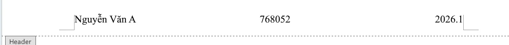
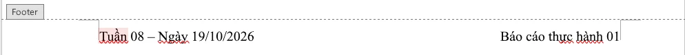
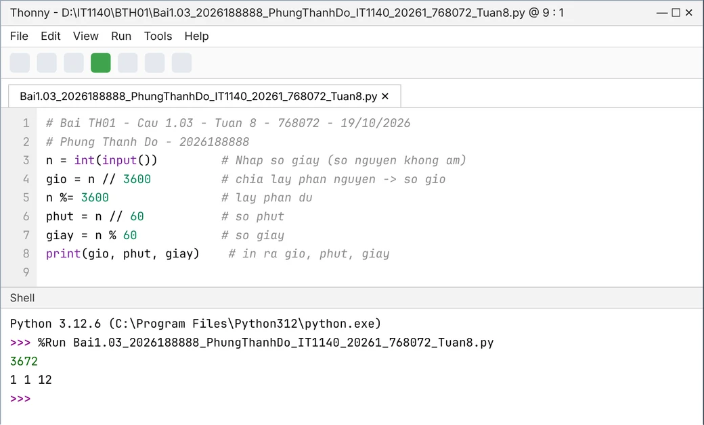
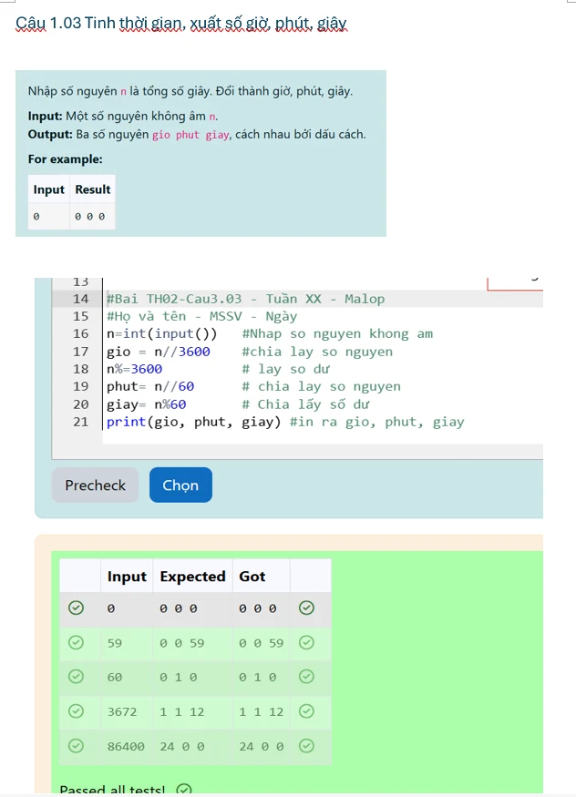

Nội quy lớp học
- 1
Chuẩn bị bài trước mỗi buổi thực hành.
Trước buổi - 2
Tham gia đúng giờ ở mỗi buổi thực hành.
Đầu buổi - 3
Khi tới lớp, chủ động bật máy tính, đăng nhập Teams, nền tảng thực hành và tải mẫu báo cáo của buổi tương ứng.
Đầu buổi - 4
Chú ý nghe giảng, không làm việc riêng trong giờ.
Trong buổi - 5
Khi cần hỗ trợ, hỏi GV/TA/bạn ngồi bên cạnh trước; hạn chế sử dụng AI.
Trong buổi - 6
Cuối mỗi buổi, lưu bài lên OneDrive hoặc nộp lên Teams để tránh mất file.
Cuối buổi - 7
Khi ra về, dọn sạch khu vực mình ngồi; kê chuột, bàn phím, ghế ngồi vào đúng vị trí.
Cuối buổi
Máy tính sử dụng
Buổi 1 – 4
Dùng máy phòng hoặc máy tính cá nhân; dùng máy cá nhân sẽ thuận tiện lưu file hơn.
Buổi 5 · Kiểm tra
Kiểm tra qua SEB, bắt buộc dùng máy của phòng thực hành. Kiểm tra trước rằng bạn đăng nhập được Teams và nền tảng thực hành trên máy phòng.
Trên đây là một vài nhắc nhở chung cho các buổi thực hành. Mong các bạn hợp tác!
Hướng dẫn nộp báo cáo thực hành
Mỗi tuần nộp 2 file lên Teams, hạn nộp theo Assignment trên Teams.
Việc cần làm
Mỗi tuần nộp 2 file lên Teams, theo hạn của Assignment trên Teams:
1. <MSSV>_<HoTen>_ # báo cáo theo mẫu 2. <MSSV>_IT1140_ 20261_ <MaLop>_ Tuan<X>_ BTH<0x>.pdf <HoTen>_ # thư mục bài làm └── <MSSV>_IT1140_ 20261_ <MaLop>_ Tuan<X>_ BTH<0x>.zip <HoTen>_ ├── Bai<x.1.1>_IT1140_ 20261_ <MaLop>_ Tuan<X>_ BTH<0x>/ <MSSV>_ ├── Bai<x.1.2>_<HoTen>_ IT1140_ 20261_ <MaLop>_ Tuan<X>.py <MSSV>_ ├── ... ├── <MSSV>_<HoTen>_ IT1140_ 20261_ <MaLop>_ Tuan<X>.py <HoTen>_ └── <MSSV>_IT1140_ 20261_ <MaLop>_ Tuan<X>_ BTH<0x>.docx <HoTen>_ IT1140_ 20261_ <MaLop>_ Tuan<X>_ BTH<0x>.pdf
Quy tắc đặt tên
File báo cáo (.pdf, .docx) và file .zip theo cú pháp MSSV_HoTen_IT1140_20261_MaLop_TuanX_BTH0x. Mỗi câu một file code, theo cú pháp Bai<số câu>_MSSV_HoTen_IT1140_20261_MaLop_TuanX.
Họ tên viết không dấu, liền nhau, viết hoa chữ cái đầu mỗi từ. 20261 là mã học kỳ, TuanX là tuần học (ví dụ Tuan8), số bài thực hành 2 chữ số (BTH01).
2026188888_PhungThanhDo_ 2026188888_IT1140_ 20261_ 768072_ Tuan8_ BTH01.pdf PhungThanhDo_ 2026188888_IT1140_ 20261_ 768072_ Tuan8_ BTH01.docx PhungThanhDo_ Bai1.2.1_IT1140_ 20261_ 768072_ Tuan8_ BTH01.zip 2026188888_ PhungThanhDo_ IT1140_ 20261_ 768072_ Tuan8.py
Cấu trúc file zip
File zip chứa một thư mục cùng tên, gồm đủ file code, file Word và file PDF của báo cáo.
<MSSV>_<HoTen>_ └── <MSSV>_IT1140_ 20261_ <MaLop>_ Tuan<X>_ BTH<0x>.zip <HoTen>_ ├── Bai<x.1.1>_IT1140_ 20261_ <MaLop>_ Tuan<X>_ BTH<0x>/ <MSSV>_ ├── Bai<x.1.2>_<HoTen>_ IT1140_ 20261_ <MaLop>_ Tuan<X>.py <MSSV>_ ├── ... ├── <MSSV>_<HoTen>_ IT1140_ 20261_ <MaLop>_ Tuan<X>.py <HoTen>_ └── <MSSV>_IT1140_ 20261_ <MaLop>_ Tuan<X>_ BTH<0x>.docx <HoTen>_ IT1140_ 20261_ <MaLop>_ Tuan<X>_ BTH<0x>.pdf
Cách nén thư mục thành file zip trên Windows: Nén và giải nén tệp (Microsoft).
Cấu trúc báo cáo
Làm trực tiếp trên file mẫu, giữ nguyên các mức tiêu đề; mỗi câu gồm 2 ảnh: ảnh code chạy trên Thonny / VS Code và ảnh kết quả chạy trên hệ thống. Xuất file Word sang PDF sau khi hoàn thành.
Header: <Họ và tên sinh viên> | <Mã lớp> | <Mã kỳ> Footer: Tuần <XX> – Ngày <dd/mm/yyyy> | Báo cáo thực hành <XX> BÀI THỰC HÀNH <0x> (Heading 1) ├── BÀI TẬP TRÊN LỚP (Heading 2) │ ├── Bài x.1 <Tên bài> (Heading 2) │ │ ├── Câu x.1.1 <Đề bài> (Heading 3) │ │ │ ├── Ảnh 1: code + kết quả chạy trên Thonny / VS Code │ │ │ └── KẾT QUẢ + Ảnh 2: chạy trên hệ thống thực hành │ │ │ (nếu thừa quá nhiều khoảng trắng có thể tách thành 2 ảnh) │ │ └── Câu x.1.2 ... │ └── Bài x.2 ... └── BÀI TẬP TỰ LUYỆN (Heading 2) └── Bài x.5, x.6 ... (cùng cấu trúc)
Header & Footer


Chèn hình kết quả đạt yêu cầu
- Các dòng code đầy đủ chú thích
- Căn chỉnh hình ảnh phù hợp để có thể nhìn rõ được nội dung trong ảnh.
- Ảnh 1 chụp trên Thonny / VS Code / IDE khác: thấy rõ tên file, code và kết quả chạy ở Shell / Terminal.
- Code trên Thonny / VS Code phải có thêm dòng chú thích
#print("#Bai<số câu> <MSSV> <Họ tên> - <Mã lớp>"), ví dụ#print("#Bai1.1.1 202515747 Vu Minh Duc - 768077"). Chỉ thêm dòng này trên Thonny / VS Code, không cần thêm khi nộp trên hệ thống. - Ảnh 2 chụp trên hệ thống: là kết quả sau khi ấn "Chọn", và có màu "xanh lá" ở khu vực testcases.


Tiêu chí chấm điểm
Báo cáo đạt khi nộp đủ 2 file; thiếu 1 trong 2 file chỉ được nửa số điểm. Chỉ làm bài trên lớp tối đa 8.5 điểm; mỗi bài tự luyện làm thêm được +0.25.
Điểm và thắc mắc điểm
Quá thời hạn trên, điểm bài thực hành đó được giữ nguyên.